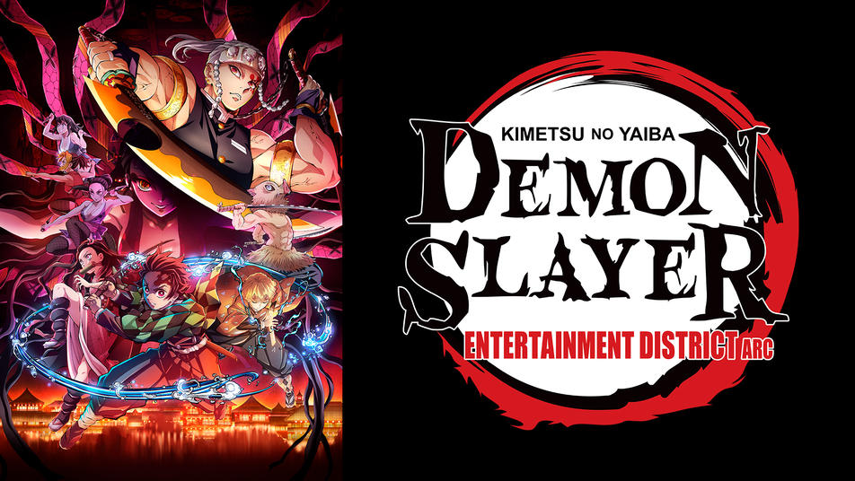
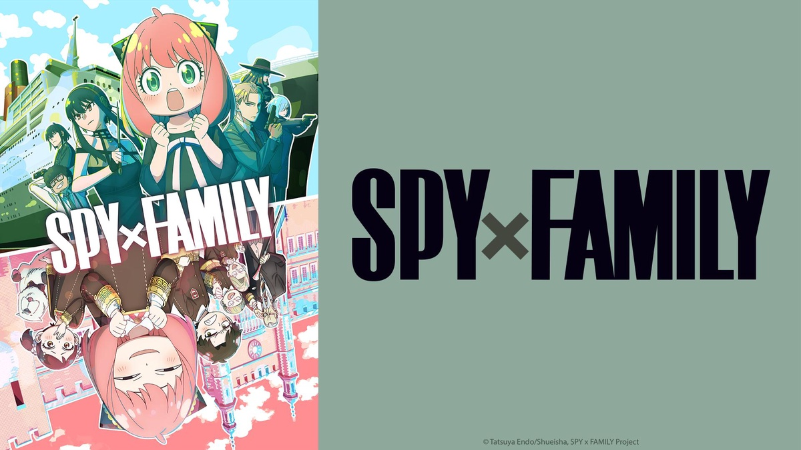
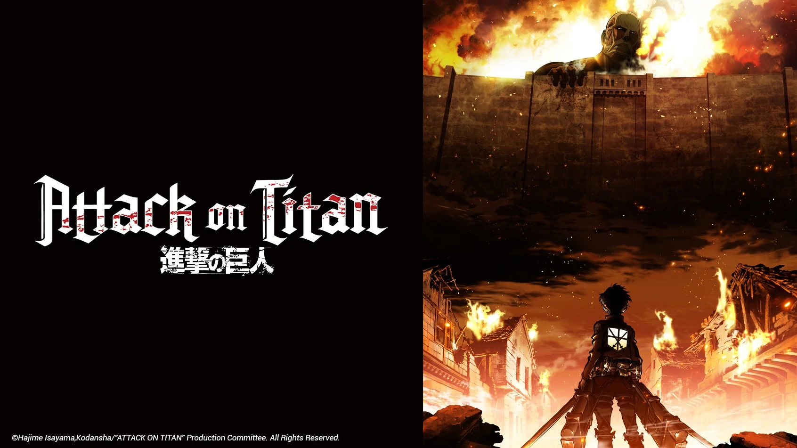
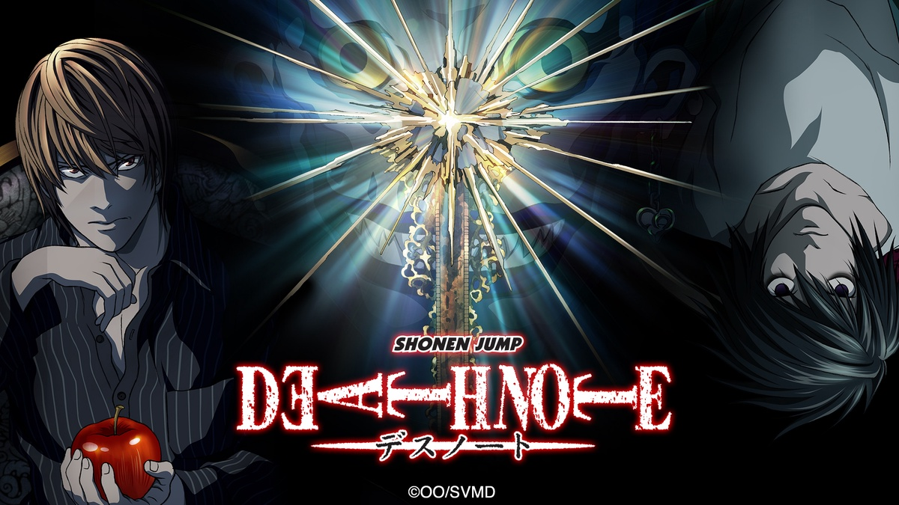
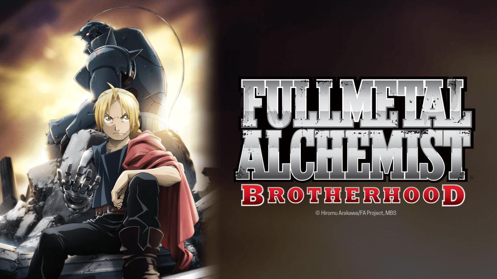

RANKINGS
WINTER 2022

Demon Slayer: Entertainment District Arc
- Genre:
Action, Fantasy - Rating:
8.78/10 - Episode Number:
11 Episodes, 26 mins/each - Summary:
The devastation of the Mugen Train incident still weighs heavily on the members of the Demon Slayer Corps. Despite being given time to recover, life must go on, as the wicked never sleep: a vicious demon is terrorizing the alluring women of the Yoshiwara Entertainment District. The Sound Hashira, Tengen Uzui, and his three wives are on the case. However, when he soon loses contact with his spouses, Tengen fears the worst and enlists the help of Tanjirou Kamado, Zenitsu Agatsuma, and Inosuke Hashibira to infiltrate the district's most prominent houses and locate the depraved Upper Rank Demon.
SPRING 2022

SPY x FAMILY
- Genre:
Action, Comedy - Rating:
8.58/10 - Episode Number:
12 Episodes, 24 mins/each - Summary:
The series follows master spy Twilight, who must disguise himself as psychiatrist Loid Forger and build a mock family in order to investigate political leader Donovan Desmond. Unbeknownst to him, his wife, Yor, is actually an assassin known as the Thorn Princess, while his daughter, Anya, has telepathic abilities.
SUMMER 2022

Classroom of the Elite II
- Genre:
Drama - Rating:
8.13/10 - Episode Number:
13 Episodes, 23 mins/each - Summary:
Set in the prestigious national high school "Tokyo Metropolitan Advanced Nurturing School" established by the Japanese government, the story around a class "Class A" that can advance almost 100% to the desired path after graduation.
FALL 2022

Chainsaw Man
- Genre:
Action, Fantasy - Rating:
8.54/10 - Episode Number:
12 Episodes, 24 mins/each - Summary:
Following a betrayal, a young man left for dead is reborn as a powerful devil-human hybrid after merging with his pet devil and is soon enlisted into an organization dedicated to hunting devils.

Attack on Titan
- Genre:
Action, Drama, Suspense - Rating:
8.54/10 - Episode Number:
25 Episodes, 24 mins/each - Summary:
Centuries ago, mankind was slaughtered to near extinction by monstrous humanoid creatures called Titans, forcing humans to hide in fear behind enormous concentric walls. What makes these giants truly terrifying is that their taste for human flesh is not born out of hunger but what appears to be out of pleasure. To ensure their survival, the remnants of humanity began living within defensive barriers, resulting in one hundred years without a single titan encounter. However, that fragile calm is soon shattered when a colossal Titan manages to breach the supposedly impregnable outer wall, reigniting the fight for survival against the man-eating abominations.
After witnessing a horrific personal loss at the hands of the invading creatures, Eren Yeager dedicates his life to their eradication by enlisting into the Survey Corps, an elite military unit that combats the merciless humanoids outside the protection of the walls. Eren, his adopted sister Mikasa Ackerman, and his childhood friend Armin Arlert join the brutal war against the Titans and race to discover a way of defeating them before the last walls are breached.

Death Note
- Genre:
Supernatural, Suspense - Rating:
8.62/10 - Episode Number:
37 Episodes, 23 mins/each - Summary:
Brutal murders, petty thefts, and senseless violence pollute the human world. In contrast, the realm of death gods is a humdrum, unchanging gambling den. The ingenious 17-year-old Japanese student Light Yagami and sadistic god of death Ryuk share one belief: their worlds are rotten.
For his own amusement, Ryuk drops his Death Note into the human world. Light stumbles upon it, deeming the first of its rules ridiculous: the human whose name is written in this note shall die. However, the temptation is too great, and Light experiments by writing a felon's name, which disturbingly enacts his first murder.
Aware of the terrifying godlike power that has fallen into his hands, Light—under the alias Kira—follows his wicked sense of justice with the ultimate goal of cleansing the world of all evil-doers. The meticulous mastermind detective L is already on his trail, but as Light's brilliance rivals L's, the grand chase for Kira turns into an intense battle of wits that can only end when one of them is dead.

Fullmetal Alchemist: Brotherhood
- Genre:
Action, Adventure, Drama, Fantasy - Rating:
9.10/10 - Episode Number:
64 Episopdes, 24 mins/each - Summary:
After a horrific alchemy experiment goes wrong in the Elric household, brothers Edward and Alphonse are left in a catastrophic new reality. Ignoring the alchemical principle banning human transmutation, the boys attempted to bring their recently deceased mother back to life. Instead, they suffered brutal personal loss: Alphonse's body disintegrated while Edward lost a leg and then sacrificed an arm to keep Alphonse's soul in the physical realm by binding it to a hulking suit of armor.
The brothers are rescued by their neighbor Pinako Rockbell and her granddaughter Winry. Known as a bio-mechanical engineering prodigy, Winry creates prosthetic limbs for Edward by utilizing "automail," a tough, versatile metal used in robots and combat armor. After years of training, the Elric brothers set off on a quest to restore their bodies by locating the Philosopher's Stone—a powerful gem that allows an alchemist to defy the traditional laws of Equivalent Exchange.
As Edward becomes an infamous alchemist and gains the nickname "Fullmetal," the boys' journey embroils them in a growing conspiracy that threatens the fate of the world.

One Punch Man
- Genre:
Action, Comedy - Rating:
8.50/10 - Episode Number:
12 Episodes, 24 mins/each - Summary:
The seemingly unimpressive Saitama has a rather unique hobby: being a hero. In order to pursue his childhood dream, Saitama relentlessly trained for three years, losing all of his hair in the process. Now, Saitama is so powerful, he can defeat any enemy with just one punch. However, having no one capable of matching his strength has led Saitama to an unexpected problem—he is no longer able to enjoy the thrill of battling and has become quite bored.
One day, Saitama catches the attention of 19-year-old cyborg Genos, who witnesses his power and wishes to become Saitama's disciple. Genos proposes that the two join the Hero Association in order to become certified heroes that will be recognized for their positive contributions to society. Saitama, who is shocked that no one knows who he is, quickly agrees. Meeting new allies and taking on new foes, Saitama embarks on a new journey as a member of the Hero Association to experience the excitement of battle he once felt.